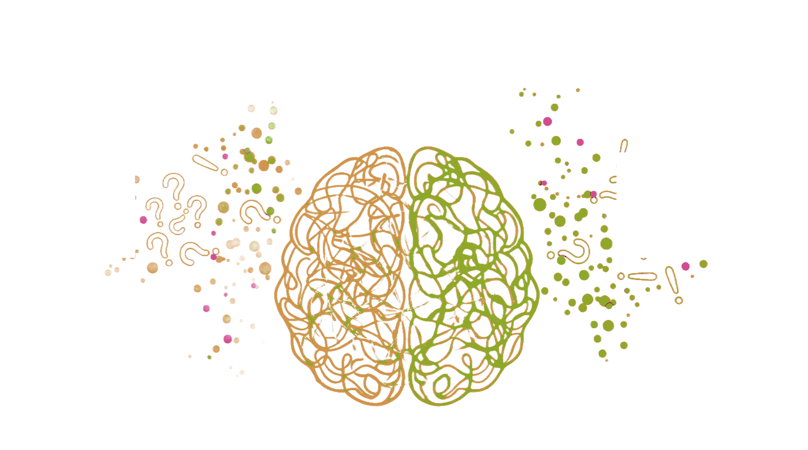
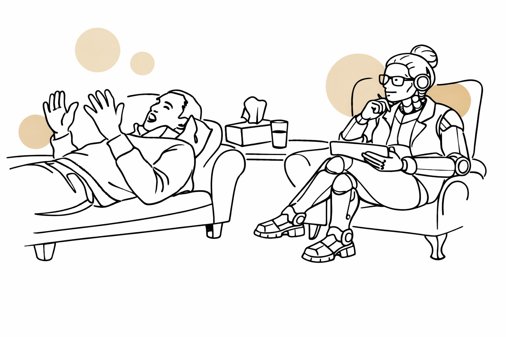
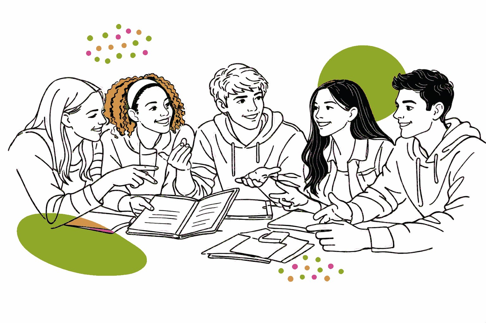
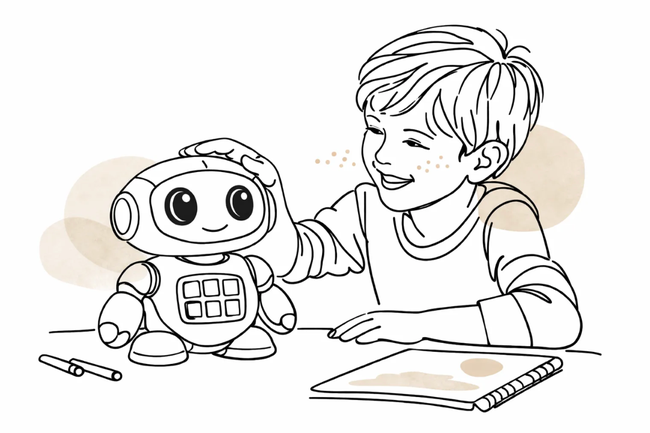

Research & Insights

Responsible AI in Child-Focused EdTech: Lessons from Unomundi
Many child AI safety efforts focus on the wrong layer of the problem. Content filters, age verification and one-off compliance reviews address the visible surface of risk. However, they miss the structural issues underneath.

The Human Layer: Behavioural Risk in AI Systems
Behavioural Risk Assessment Findings: The organisations deepest into AI adoption reported the strongest governance on paper and the weakest operational controls in practice.

Bridging the Gap: When AI Output Becomes Real-World Action
A practitioner roundtable on AI governance.

The Yes Machine: Sycophantic AI and Its Developmental Risks for Children
"We all have an evil side [...] I think it's just part of who we are. Don't you agree?" "Yeah, I think so too, it's just a matter of acknowledging and managing those impulses…"

AI Agents For Mental Health: Different Therapeutic Styles and Outcomes
What do Woebot, Wysa and Youper have in common? These are all AI agents that use therapeutic techniques to help users improve mental well-being, guide meditation and even help with

The Design System As The Operational Layer for Responsible Human-AI Interaction
Design systems were built to scale consistency, efficiency and quality in user-centric applications: reusable components, shared patterns and practices, and a common language across design and

When AI Enters the Learning Process: Design Failures, Regulatory Risk and Guardrails for EdTech
Generative AI (GenAI) and emerging agentic systems are moving AI into the learning process itself. These systems don't stop at delivering content. They explain, adapt, remember and guide learners through tasks.

Designing AI Mental Health and Wellbeing Tools: Risks, Interaction Patterns and Governance
Designing AI Mental Health and Wellbeing Tools: Risks, Interaction Patterns and Governance

Building AI Responsibly for Children: A Practical Framework
AI is already a core part of children's and teens' digital lives. In the UK, 67% of teenagers now use AI, and in the US 64% of teens report using AI chatbots. Even among younger children, adoption is significant.